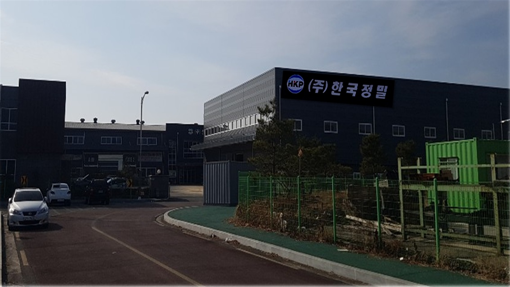
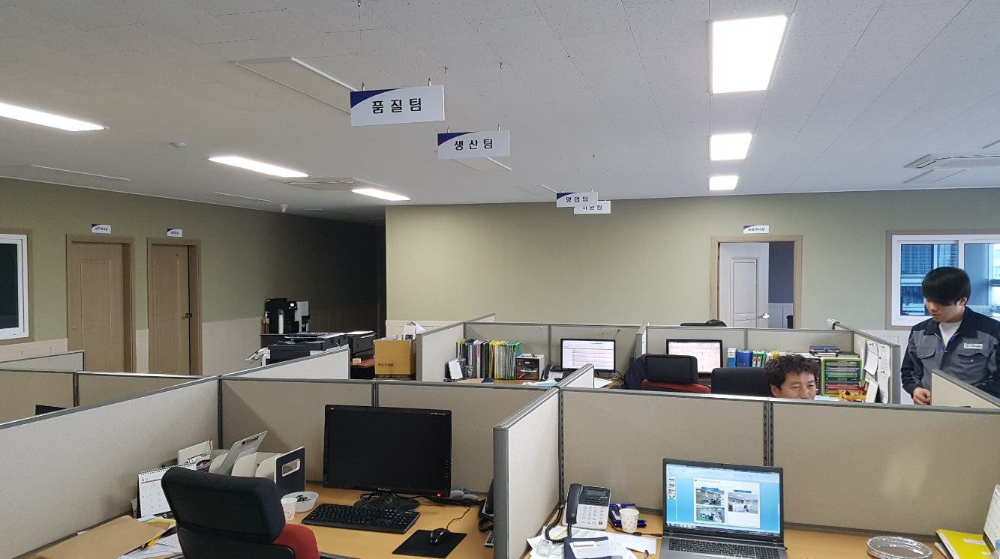
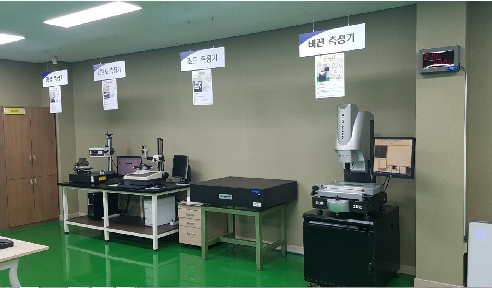
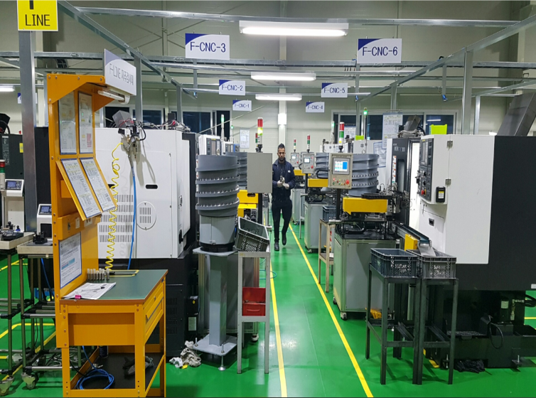

HISTORY
회사 연혁
1999년 설립 이후 생산기반, 품질시스템, 인증체계를 지속적으로 확장해 왔습니다.
1999.04한국정밀 설립
2000.01대한소결금속㈜ 업체 등록
2003.09CLEAN 사업장 인증
2004.08QS9000 / ISO9002 품질경영시스템 인증
2008.11KSA9000 / ISO9001 품질경영시스템 인증
2009.05경영혁신형 중소기업 선정
2009.12VENTURE 기업 등록
2010.02INNO-BIZ 선정
2010.05대구광역시 달성군 구지면 내리 신공장 이전
2011.12㈜한국정밀 법인 전환
2012.02기술연구소 인증
2012.082공장 신설
2013.04ISO/TS16949 품질경영시스템 인증
2016.03창녕군 대합공단 신사옥 이전
2016.04만도 MQ 인증
2018.04IATF16949 품질경영시스템 인증
2021.01신사옥 C동 증설
2021.04현대모비스 MSQ 인증
2021.12현대트랜시스 TSQ 인증



